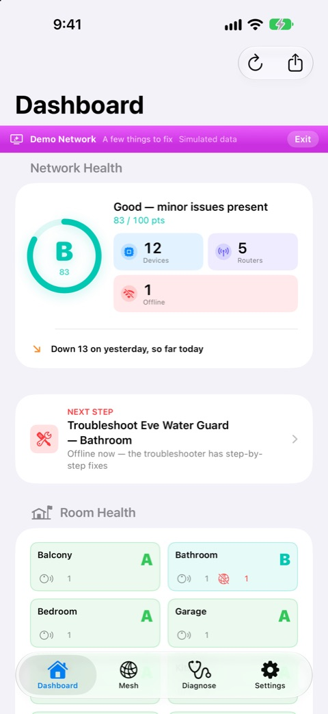
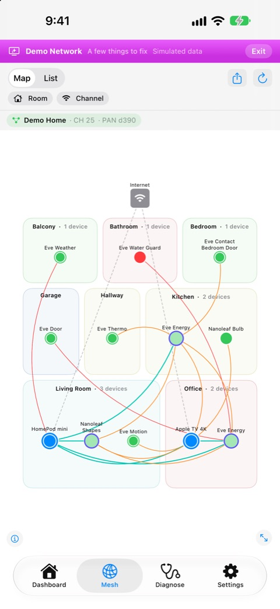
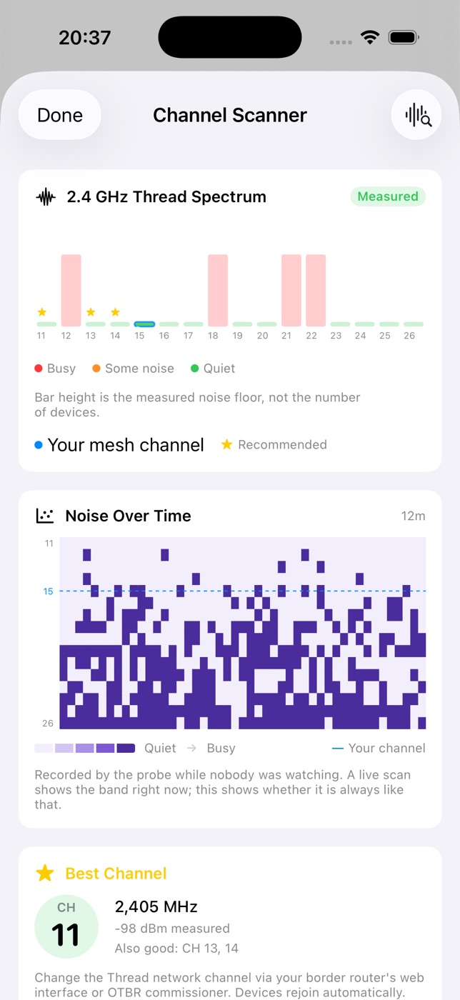
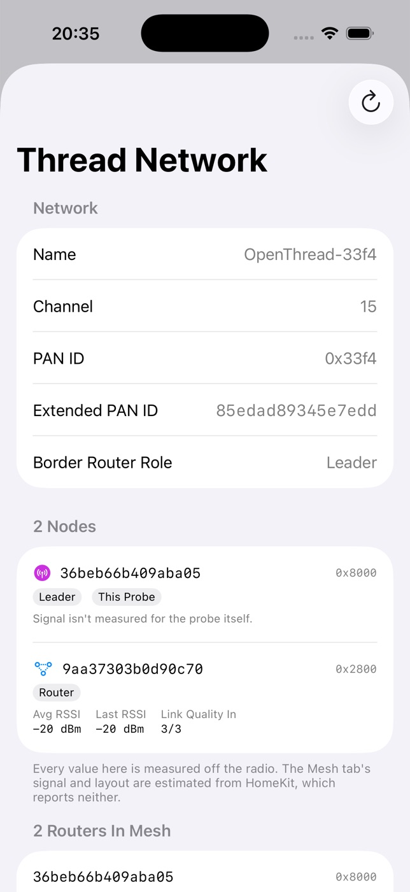
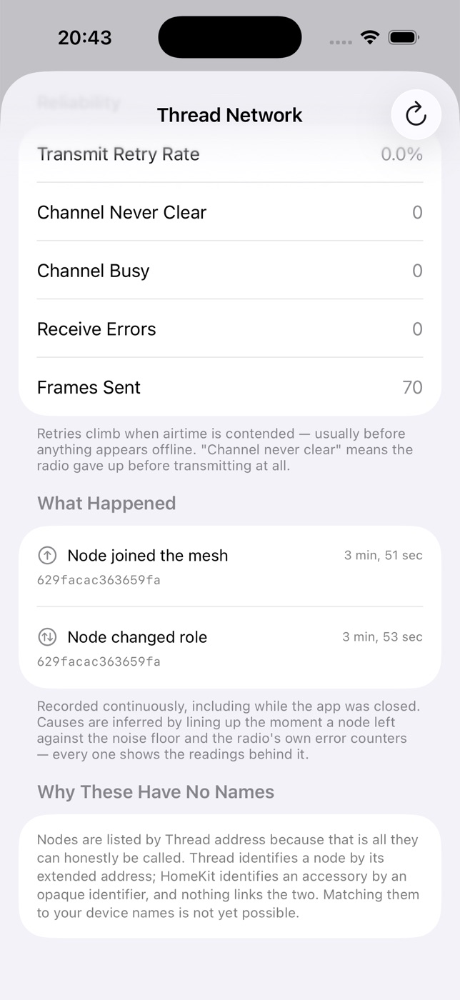
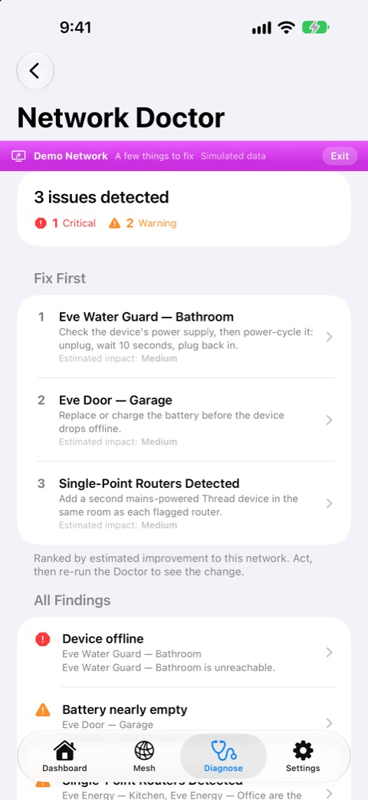

Thread-Geräte sind von Haus aus unsichtbar. Sie funktionieren einfach – bis eines das nicht mehr tut und Ihnen niemand sagt, warum. ThreadMapper zeigt, was Ihre Geräte und Ihr Netzwerk über sich selbst sagen: welche Geräte im Thread-Netz sind, welche Border Router Sie haben, welche Verbindungen sie melden. Was ThreadMapper nicht auslesen kann, erscheint nicht.
Das Problem
Ein Sensor meldet sich nicht mehr. Eine Stunde später ist er wieder da. Ihre Zentrale sagt, alles sei in Ordnung – von ihrem Standort aus ist es das auch. Die Informationen, die das erklären würden – Signal, Routing, was sonst noch auf dem Band los war –, bekommen Sie überhaupt nie zu sehen.
Eine Note von A–F samt der konkreten Probleme, die sie drücken – nicht nur eine Zahl.
Ihre Thread-Geräte nach Raum – mit den Verbindungen, die sie melden. Wo kein Gerät eine Verbindung gemeldet hat, wird keine gezeichnet.
Ein Gerät gilt als Thread-Gerät, wenn es das selbst angibt, in seiner Matter-Diagnose oder seinem HomeKit-Thread-Status – nie wegen seiner Marke. Alles andere steht getrennt davon, als das, was es ist.
Offline erst, wenn es wirklich weg ist: Ein schlafender Batteriesensor bekommt zwei Stunden, ein netzbetriebenes Gerät fünfzehn Minuten, und Geräte, die gemeinsam verstummen, ergeben eine Warnung.
Betriebszeit, Neustarts und Firmware-Änderungen für jedes Zubehör.
Note und Komplikationen am Handgelenk; auf dem iPad ein echtes Layout mit Seitenleiste statt eines aufgeblasenen iPhones.
Woher diese Kennzeichnungen stammen
iOS gibt Apps von Drittanbietern keine Funk-Signalstärke für Thread-Zubehör heraus, keine Eltern-Kind-Beziehungen und keine Routing-Tabelle. Jede App, die Ihnen dBm für ein HomeKit-Gerät anzeigt, zeigt Ihnen etwas, das sie gar nicht auslesen kann.
Deshalb zeigt ThreadMapper überhaupt kein Signal. Ein Gerät gilt als Thread-Gerät, wenn es das selbst angibt, als Border Router gilt nur, was das Netzwerk als solchen belegt, und eine Linie auf der Karte ist eine Verbindung, die ein Gerät gemeldet hat. Was das iPhone messen kann, nämlich wie schnell ein Zubehör antwortet, wird genau als das gezeigt: in Millisekunden.
Ein OpenThread Border Router allein löst das nicht.
Seine REST-API liefert echte Angaben zum Netzwerk – Name, Kanal, PAN ID – und ThreadMapper nutzt sie. Aber wir haben seine Diagnose-Endpunkte an einem laufenden Netz aus zwei Knoten getestet: Die Anfragen laufen durch und liefern nichts Brauchbares. Routing je Knoten ist auf diesem Weg nicht zu bekommen, was auch immer die Dokumentation nahelegt.
Genau dafür gibt es die Sonde.
Die Sonde
Ein schlanker Agent auf einem Raspberry Pi mit 802.15.4-Dongle tritt Ihrem Thread-Netz als echter Knoten bei. Von innen wird alles lesbar, was das iPhone nicht sehen kann – und weil er nie schläft, sieht er die Ausfälle um 3 Uhr nachts, die Sie verschlafen.
Ein Wasserfall über das ganze Band. Sie sehen die Mikrowelle beim Abendessen und abends das WLAN der Nachbarn.
Ausfälle neben Rauschen und den Fehlerzählern des Funkmoduls – mit den Messwerten dazu und „keine klare Ursache“, wenn es keine gibt.
Was passiert ist, seit Sie die App zuletzt geöffnet haben. Und Stille, wenn nichts passiert ist.
Sendewiederholungen und Fehlschläge wegen belegtem Kanal – Überlast zeigt sich hier lange, bevor etwas offline aussieht.
Der Agent ist Open Source und läuft auf einem Raspberry Pi 4 oder 5, den Sie vielleicht schon haben – der nötige 802.15.4-Dongle kostet etwa 10–25 $. Einrichtungsanleitung →
Lesen Sie die Anleitung zuerst: Ein Raspberry Pi hat kein eigenes Thread-Funkmodul, und der Beitritt zu einem bestehenden Apple- oder Google-Netz braucht Zugangsdaten, die sich aus diesen Plattformen noch nicht exportieren lassen. Es ist kein Produkt, das man kaufen kann – es ist ein Eigenbau.
In der App






Datenschutz
Messwerte werden bewusst nicht synchronisiert.
Jedes iPhone und iPad behält selbst, was es von Ihrem Netzwerk gesehen hat. Diese Daten zusammenzuführen, ergäbe einen Verlauf, den kein einzelnes Gerät beobachtet hat. Notizen und Einstellungen werden synchronisiert; Messwerte bleiben, wo sie sind.
Pro
Sonden-Funktionen liegen nicht hinter der Bezahlschranke.
Wenn Sie sich schon die Mühe machen, eine Sonde zu bauen, wäre eine zweite Bezahlschranke ein schlechtes Dankeschön. Alles, was die Sonde freischaltet, ist enthalten.
Field
Field ist ein einmaliger Kauf für Installateure und enthält alles, was Pro bietet. „Arbeit nachweisen“ führt in sieben Schritten durch einen Besuch. Halten Sie die Messwerte des Kunden von denen Ihres eigenen Zuhauses getrennt, erfassen Sie das Netzwerk, bevor Sie etwas anfassen, erledigen Sie die Arbeit, erfassen Sie es beim Gehen erneut, sehen Sie das Ergebnis gemessen an Ihren eigenen Abnahmekriterien, bevor der Kunde es sieht, und übergeben Sie den Bericht und einen Aufkleber für den Hub.
Ohne Installation
Code scannen oder Link öffnen, und ein kleiner Teil von ThreadMapper läuft, ohne dass Sie die App installieren. Er benotet ein simuliertes Zuhause mit genau der Engine, die er auch auf Ihr eigenes anwenden würde – zwölf Geräte, zwei Border Router, eines offline, eines mit schwacher Batterie – und sagt vor allem anderen, dass jede Zahl darin simuliert ist. Ein App Clip darf weder Apple Home noch Ihr lokales Netzwerk auslesen – und genau daher stammen die Zahlen der echten App. Kostenlos.
Erste Schritte
Ein Zuhause mit mindestens einem Thread Border Router – einem HomePod mini, Apple TV 4K oder Ähnlichem –, denn ThreadMapper liest Ihr Netzwerk über HomeKit. Der Netzwerkassistent und die Fehlerbehebung brauchen iOS 26 auf einem Gerät, das Apple Intelligence unterstützt; KI-Erkenntnisse laufen auf jedem iPhone. Die Sonde ist völlig optional.
Erst einmal umsehen? Schalten Sie den Demomodus ein, und die ganze App läuft auf einem simulierten Netzwerk – keine Hardware, kein HomeKit, nichts einzurichten.